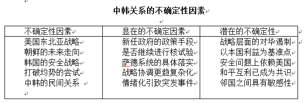

收录于合集

简
门洪华
同济大学同济特聘教授，同济大学中国战略研究院院长，政治与国际关系学院院长
刘笑阳
同济大学马克思主义理论博士后流动站博士后，同济大学中国战略研究院科研秘书
内容提要 建交近25 年来，中韩关系有着跨越式发展，其复杂性也不容忽视，蕴藏着诸多不确定性的因素，在一定程度上制约着中韩合作的预期。以不确定性因素的影响与管控为视角，解析中韩关系的不确定性因素和确定性因素，尤其针对美国地缘布局、韩国安全战略、朝鲜核武动向、中韩民间认知差异等因变量，提出如下政策建议：理性认识中韩关系的发展趋势，强调合作仍是大势所趋，要不断深化相互间的理解与包容，坚守作为共同利益的半岛无核化，有效利用中韩经贸的外溢效应，推动完善双边合作机制的有效性，通过人文交流促进在中韩两个社会形成价值观相互包容、相互借鉴的氛围，夯实民间互信的基础。
关键词 中韩关系；确定性；不确定性；战略研究
1992 年建交以来，中韩关系在近25 年间实现了全方位、跨越式发展，巨大合作潜力得以充分发挥，为两国和两国人民带来重要利益，为维护地区稳定发挥了重要作用。与此同时，中韩战略合作伙伴关系需要共同呵护。由于中韩关系本身的非对称性特点，双边互惠关系更趋于常态。换言之，双方在合作中交换的是基于国家利益的“大致对等的价值”，故而单边行为对双边关系的影响更具敏感性。这一特点在2016 年表现得尤为明显，使其成为中韩关系发生重大转折的一年，起因是萨德问题在很大程度上反映出了中韩战略合作伙伴关系的限度与效用难题。战略伙伴关系在“应然”纬度上是一项综合性的战略设计，但中韩两国却在“实然”维度上选择将不同领域区别对待，使得中韩战略合作伙伴关系难以在统领双边关系全方位发展的目标上，发挥实质性作用。
中韩战略合作伙伴关系的目标与手段不相匹配，其关键原因在于，中韩关系的复杂性不容忽视，蕴藏着诸多不确定性的因素，无论是美国的地缘布局、韩国的安全战略、朝鲜的核武动向乃至民间的认知差异等，都因其难以量度的特征制约着中韩两国的合作预期。与此同时，中韩两国在政治、经济与人文等方面的固有基底也为缓和、应对上述不确定性提供了可能。 有鉴于此，本文以不确定性因素的影响与管控为视角，对中韩战略合作伙伴关系进行分析，寻找双边互动的新方法，探究两国交往的新路径，以稳定并发展中韩关系。
不确定性因素的影响与管控
国际行为体的有限理性既有利于塑造预期，同时也会引致对预期的失望与恐惧。在这个层面上，阻碍预期与合作产生的往往是结构性的国际体系、进程性的国际互动与观念性的国际认知中必然存在的信息缺失与混沌状态，而这也正是不确定性因素产生的起点。理性主义指引下的国家选择遵循成本—收益的逻辑，可能造成冲突与竞争，同样也能够促成合作。但是在面对不确定性时，国家却通常非理性地呈现出“恐惧”的态度。在非对称性的国家关系中，国家或许会选择预期值为负的合作，但却极少选择不可预期的合作。其原因在于，前者带来的风险是可控的，国家能明确这种合作的底线所在；后者却可能使得国家的理性判断和战略谋划陷入混乱，使得合作的底线更为模糊，也更为危险。上述逻辑将导致可能的“合作困境”，即便不确定性因素在国家间关系中不占主流，但国家也可能因为对未知的恐惧而放弃对已知的裁量。
然而，合作障碍的存在并不意味着国家只能被动接受不确定性所带来的负面影响。 不确定性有主观反映，也有客观的征候，是主观与客观相互影响与牵制的状态，管控与克服不确定性因素也应以主观与客观的辩证关系为出发点。 有限理性的个体既要依靠心智模式来弱化不确定性，稳定预期，协调行动，还要敢于向自己固有的认识或观念挑战，借由对不确定性因素的管控乃至将其塑造为确定性因素，以适应事物发展的需要。
塑造确定性，应当接受“妥协让步”的确定性，用新发展目标寻找确定性，注重实际效果的确定性。 在现实的国际关系中，可以借鉴其内容并归纳为以下基本方向：以更新战略目标（“新发展目标”）树立确定性的方向，以强化战略协调（“妥协让步”）维持确定性的稳定，以贯彻战略评估（“实际效果”）夯实确定性的基础。其中，更新战略目标是不确定性因素内部的潜在确定性与外在确定性因素的结合，旨在将不确定性因素纳入战略目标的总体方向；强化战略协调是不确定性因素内部的显在不确定性与外在确定性因素的结合，旨在管控不确定性因素的负面效应；贯彻战略评估则是力图促成上述关联的时间效应，从而使其从当下的互动延续至未来的发展。
与此相应，管控不确定性和保障确定性的主要路径则是 ：1. 注重国家能力的提升。不确定性既源于信息本身的缺陷，也由于对信息认知程度的缺陷。伴随着国家科学技术的发展与战略眼光的成熟，许多不确定性因素都可能转化为可以量度的“风险”；2. 注重制度对预期的塑造。国际制度可以向成员国提供可靠的信息和信息交流的渠道，加快信息流通，解决信息不确定性；3. 注重观念对行为的认同。建构主义认为，由于行为体需要基于认同与规范来确定如何应对客体和他者的行动，因此有必要在社会语境下对信息提出解释，并形成适当性的观念。这里所提到的观念不同于国家能力当中的观念因素，而是一种互动式的理解与认知。总结来说，如果国家能力构成上述路径的原点，那么制度就构成了其中的骨架，而观念则是填充其间的有机组成。
中韩关系的不确定性因素
作为东北亚地区最重要的双边关系之一，中韩伙伴关系反映出两国政府始终在国家利益和共同利益之间、在竞争与合作之间、在现实主义特征与复合相互依赖特征之间寻找着战略平衡点。而上述钟摆似的互动过程，难免会引致信息的缺失与沟通的滞后，从而在行为体（美国、朝鲜和韩国）、行为体系统（地区均势体系）和行为体内部（民间关系）浮现出难以预期的不确定性因素。同时，这些不确定性因素本身也有其潜在确定性的一面，对其加以剖析和区分无疑能够为管控不确定性提供必要的视角。
（一）美国东北亚战略：意图改变？
2012 年贝拉克·奥巴马成功连任后，美国积极推行“亚太再平衡”战略，并拉拢韩国参与其中。这一行动在经济领域上的主要表现是，积极拉拢韩国加入美国主导的《太平洋伙伴关系协议》谈判进程，阻碍韩国加入由中国发起的亚洲基础设施投资银行；在军事、安全领域则主要体现是，在韩国部署萨德导弹防御系统，推动美日、美韩同盟走向一体化，在军事上围堵中国的崛起与影响。 **特别是， 萨德系统作为美国在东北亚地区钉下的楔子，必将进一步固化朝鲜半岛和东北亚地区的结构性安全困境。这种战略选择再一次显露出美韩同盟的排他性与潜在敌对性，进而使中韩之间互有提防，加剧了双方的认知差异，削弱了战略互信。**需要指出的是，2012 年以来的美国东北亚战略本身具有很多潜在的确定性，然而它的存在却使得不确定性的影响更为显著。
相比之下，真正意义上的不确定性因素其实是美国政府未来的政策选择。美国新任总统唐纳德·特朗普是否会推翻民主党人的美国东北亚战略？特别是他已经签署行政命令停止推动TPP，使得奥巴马时期的美国“亚太再平衡”战略失去了经济抓手。然而，考虑到特朗普本身在对待中国态度上的模糊性及其所欠缺的外交经验，我们尚不能将TPP 的命运与美国放弃东北亚这一战略阵地相互关联。事实上，面对中国更加积极主动承担地区责任的态势，特朗普再次明确加强与日本、韩国的安全同盟关系，并积极探索美俄双边关系的新动向，都蕴含着对中国的战略提防。 除此之外，美国东北亚战略的整体设计与未来走向有待调整，从而使得美国国内政治变化所引致的全球战略调整，日益成为影响中韩关系的最关键的外部不确定性因素。
（二）朝鲜的未来走向：继续核试？
朝鲜持续核试是引动东北亚地区关系调整和中韩关系不确定性的重要因素。 2008 年以来，在韩朝改善关系动力缺失的现实下，韩国试图通过中国打开对朝关系僵局，敦促中国施压朝鲜放弃核武器和实施改革开放。然而，中国不可能对朝一味施压，导致朝鲜政权出现崩溃或采取更为激进的对抗措施。在朝鲜核试验之前，朴槿惠政权将中国视为相互信赖的战略合作伙伴。可是，随着朝鲜在2016 年接连进行两次核试验，中韩两国分歧日益凸显，导致韩国对华认识发生变化，与此同时，为应对朝鲜核试验，联合国安理会2016 年3 月3 日通过了第2270 号决议，中韩两国针对该决议也展现出了各自不同的立场与出发点：韩国过分强调制裁，相信制裁越严厉，越能够有效地扼制朝鲜；中国不仅强调制裁，更积极探索“制裁之后”如何回归对话轨道。 上述问题均凸显出，朝鲜核问题强化了中韩两国单边行为对双边关系的敏感性乃至某种程度的脆弱性。
面向未来，韩国借由朝鲜核试验的挑战，选择接受美国提出的“萨德计划”，可能再次刺激朝鲜的安全神经。而美国新政府开始执政也使朝鲜的态度更趋复杂：是通过核试验来试探美国的战略底线？还是通过某种形式的双边或多边谈判进行博弈？此外，对朝鲜采取强硬政策的朴槿惠政权变故，引起了朝鲜政府的高度关注。 未来的韩国政府是继续采取“冷暴力”还是回归到“暖接触”，也在很大程度上影响着朝鲜的安全选择。 可以说，在上述不确定性因素当中，我们能够预测的最恶劣的局面是：“南方萨德系统”和“北方核武装备”并行，导致朝鲜半岛分裂永久化；朝鲜以本国国家利益为核心导向，但同时也会参考美、韩两国新政府的政策取向，这些则是不确定性因素中所蕴含的相对确定性。
（三）韩国的安全战略：完全靠美？
自冷战结束以来，韩国逐渐形成了经济依赖中国、安全依靠美国的战略形态，促使其不断在中美之间寻求可能的战略平衡。 在某种程度上，部署萨德系统也是韩国就加入亚投行问题而对美国做出的一种“战略补偿”。更重要的是，萨德系统是超越韩国安全需求的武器：既不能防御朝鲜核武器，而韩国政府又无法介入萨德系统的运用。美韩联合军演近年来呈现出时间越来越长、攻击性越来越大的趋势，不仅“朝方针对韩美军演反应强烈”，中国也表示“不要相互刺激和加剧紧张”。美韩同盟的单边行动导致了中韩两国的“信任赤字”，同时也阻碍了半岛问题解决的实质性合作。2016 年，中韩双边货物进出口额同比2015 年降低8.4%，多少反映出萨德问题的负面效应。
实际上，部署萨德系统本身便具有许多不确定性 ：第一，由于其不具备抗击核武器的能力，反而有可能进一步刺激朝鲜，从而使半岛安全局势呈现变数；第二，萨德系统的打击范围波及中国，而中韩伙伴关系的发展目标又不允许将经济与安全问题割裂开处理，从而影响到中韩FTA 等既有机制的效用；第三，萨德系统的部署会强化东亚地区的现实主义倾向与安全困境意识，使得地区性互动的观念基础更趋复杂。此外，由于韩国国内近期出现的政局变动，韩国部署萨德系统的进度和方式或许会发生变化；韩国新政府的外交政策的调整幅度也有待时间验证。总体而言，韩国在经济和安全上分别倚赖中美的战略态势基本成型，但是韩国“制衡”行动的未来选择是会引起双边互惠的“以德报德”还是“以怨报怨”，则是决定中韩关系走向的最重要的不确定性因素。
（四）打破均势的尝试：各国协调？
中韩关系作为推动中日韩经济合作乃至地区经济一体化的重要力量，对地区均势秩序的维持起到了关键性作用。然而，伴随着中国和平崛起、美国重返亚太的双重趋势，以及朝鲜核试验、萨德入韩的双重问题，东北亚的和平共处与军事均衡再次进入复杂交互的状态。特别是，面对朝鲜核试验及其不确定性所带来的安全“恐惧”，原本消极对待美国“亚太再平衡”战略的韩国在第一时间选择求助美国，而非与本区域国家共同采取合作安全的路径加以应对，这无疑会动摇地区内部合作的进程性和观念性基础——即便美韩同盟的结构性效应早已对东北亚地区秩序产生了深刻影响。
朝鲜半岛不可能因部署萨德而归于宁静，因为任何一方的安全都不可能稳固地建立在他国不安全的基础之上，任何一方都不会任由他国肆意侵害自身的正当权益和国家战略安全利益，但是这些国家维护本国利益的方式是机制化的合作安全道路，还是对抗性的军备竞赛却仍待考验。 东北亚地区各国的权力处于再分配进程中，各国的利益出发点各异，信息沟通和战略协调更趋复杂化。上述问题所引致的地区秩序转型无疑加剧了地区整体环境的不确定性。
（五）中韩的民间关系：如何改善？
民间关系本身的变动性与敏感性，使其更容易成为双边关系中的不确定性因素。特别是在信息技术与传播手段日益丰富便捷的今天，任何一条负面信息都有可能成为民间关系波动的导火索；两国政府在战略层面的相互理解并不必然缔造两国国民在人文层面的相互理解。中韩民间关系表现得尤为明显。中韩民间关系凸显悖论：两个社会交往越紧密，两国民众的抵触情绪越浓、好感度越低。 浓厚的民族主义情绪不仅影响到两国关系的健康发展，更动摇了两个社会交流与互信的基础。 中国民众认为韩国需要摆脱“小国心态”，重新审视中国崛起；韩国民众则觉得中国要脱离“受困心态”并放弃“回归传统秩序”的抱负。两国民众如何学会反省自己和理性认识对方，尊重彼此的价值观念，破除心理上的“安全困境”与“认知误区”，成为中韩关系面临的战略性任务。
2016 年以来，韩国部署萨德系统的决定激发起更加强烈的民族抵触情绪，削弱既有的民意基础，中韩旅游互访人数受到了一定影响；韩国国内盛传的“限韩令”虽然为中国官方所否认，但在很大程度上反映了中韩民间的激进反应。可以说，民间关系中的很多问题都并非可以量度的“风险”，其中掺杂着诸多偶然性事件，而萨德问题的出现使这些偶然性事件的影响更加敏感与不确定。
中韩关系存在着一些不确定性因素，但两国近25 年来的双边互动也孵化出许多具有积极动能的确定性因素。中韩决策者基于两国在地缘与历史方面的深厚联系，以相互需求为出发点构建对地区和平稳定有利的政治关系，以经济合作促动地区安全问题的缓和与制度框架的建立，以社会交流和文教活动作为地区合作的纽带与黏合剂，以共同利益的持续累积夯实伙伴关系的基底。从而为降低不确定性因素的影响和强化对不确定性因素的管控，提供了必要的支撑与保障。
（一）中韩地缘相近、文缘相通
地缘与文缘的稳固性和长期性使其通常能够成为双边关系的确定性因素。尽管这种确定性并不必然是正向的促动，但同样能够强化两国相互之间的预期与沟通。中韩地缘相近，文缘相通。两国同处东北亚，地缘相近加强了贸易流通和人员往来。作为想要在地区秩序中发挥重要作用的国家，两者无法忽视对方的地缘价值和战略意义。中韩两国同属汉字和儒家文化圈，在生活习惯和礼仪风俗等方面容易亲近、便于交流。在人文交流层面上，中韩两国的人文交流频繁，推动了两国文化交流新机缘的出现。中韩的人文交流不仅是双边交流，更是在寻找东亚文化共性的过程中，构建东亚人文纽带、甚至是人文共同体的关键。在话语体系层面上，相似的发展梦想为深化中韩两国关系提供了共同话语。两国梦想的共通与分享为两国和两个社会的相互交流、相互借鉴奠定了目标基础与精神源泉，成为两国开展深层次交流的理念基础。
（二）中韩经济相互依赖
中韩经贸关系实现了飞跃性的发展。中国是韩国最大的贸易伙伴、最大的出口市场、最大进口来源国和最大的海外投资对象国，人民币成为韩国第二大存款外币。此外，两国间人员往来高达1000 万人次，每周都约有1100 架航班往返于两国之间，实现了高水准的务实合作。同时，中韩自由贸易协定的签订更是为韩国开启了更广阔的中国市场。前三季度，出口产品在韩减免关税约230 万美元，中韩自贸协定证书签证量占中韩两国原产地证书总签证量的87%。
中韩经济在政策落实方面致力于战略对接。 在2015 年底举行的东亚三国领导人峰会上，中韩就对接四项国家发展战略，打造新的合作方式达成共识，其亮点包括以中方倡导的“一带一路”建设同韩国“欧亚倡议”合作，以“大众创业、万众创新”同韩国“创造型经济”对接、“中国制造2025”同韩国“制造业革新3.0”对接、中韩共同开拓第三方市场开展国际产能合作对接为契机，助推两国经济转型升级，促进地区互联互通、互利共赢、共同发展。2015 年4 月11 日，韩国顺利成为亚投行创始会员国，这也是韩国第一次以创始会员国的身份加入多边国际金融机构。中韩经济在合作手段方面推进制度搭建。中韩FTA 是中国迄今为止对外签署的覆盖议题范围最广、涉及国别贸易额最大的自由贸易协定，既引入了符合国际标准的贸易规则，也推进了双方贸易结构的良性重组。中韩经贸关系的制度建设产生外溢效应，带动了地区其他国家更加关注于地区内的经济合作，为地区经济融合注入新活力。
（三）中韩政治相互需求
在各自问题方面，韩国要实现半岛统一与国内经济振兴，需要中国的理解和支持。中国经济持续发展、紧密的中韩经贸关系是韩国实现经济振兴计划的首要外部因素；而中国对半岛南北双方都有重要影响，其政策走向关乎半岛和解与统一的进程。对中国而言，在美国重返亚洲、中日关系趋冷的情势下，中国面临的地区安全压力增加，中国需要韩国发挥中介作用，推动与美国主导的地区安全机制的某种对接，牵制美国在半岛的战略投入，缓解地区安全压力。
在共同问题方面，朝核问题始终是困扰地区安全的关键问题，中韩深受其扰。两国对维护半岛和东北亚和平与稳定有着战略共识：中国致力于朝鲜半岛与东北亚地区的和平与稳定，主张构建东北亚安全对话机制；韩国新政府提出要与国际社会开展紧密合作，有效解决半岛安全危机，在解决半岛问题的同时，实现增进东北亚和平合作的良性循环。没有两国的参与、支持与合作，朝核问题的解决无从谈起，需要两国合作管控危机，保持地区稳定。此外，中韩都面临寻找新经济增长点的共同难题，资源紧张、人口老龄化、产业升级等因素成为制约两国经济发展的瓶颈，需要两国相互交流、合作与借鉴，重塑东北亚发展模式。
（四）中韩共同利益的累积
共同利益的框架是伙伴关系的基本前提，没有切实可见的共同利益，伙伴关系难以长期维系。伙伴双方不仅关注共同利益的塑造，也需要应对共同利益的分配。 在这个层面上，中韩伙伴关系在共同利益的“共享”和“分享”上都形成了相对明晰的目标与手段，这也使得具有确定性的共同利益日益成为促成双边良性合作的必要条件。 当前，东北亚各国的战略利益交汇点主要体现在无核化与半岛和平、东北亚和平与稳定、地区开发与经济发展、非传统安全领域合作四个方面，同时在潜在和显在的领土领海争端、历史认识问题、朝鲜的政策走向以及经济合作的主导权等问题上还存在共同的威胁与挑战。
对于中韩伙伴关系而言，上述共同利益同样值得关注与关照，特别是其中部分问题也是影响中韩关系的不确定性因素。在这个层面上，挖掘这些不确定性因素在共同利益视角下的确定性联系就显得格外重要。近年来，以中韩FTA 为代表的双边制度缔造了落实共同利益的现实设计，中韩双方塑造共同利益的框架初现轮廓，两国在朝鲜半岛无核化与半岛和平、东北亚和平与稳定、地区开发与经济发展和非传统安全领域合作等方面都累积形成了相对稳定的共同利益认知。 可以说，中韩两国通过20 多年的交往，逐渐将特定程度的利润、风险和责任作为双边关系中的行为准则，并对塑造共同利益的战略路径加以明确和巩固，从而使得作为国家间合作底线的共同利益得到了必要的夯实。
**
**
巩固中韩关系确定性因素、管控不确定性因素的思考
中国的东北亚战略注重维护地区和平稳定、推动多边互利共赢，从而为中国的国家安全与对外拓展提供必要的战略保障。作为东北亚地区最重要的双边关系之一，中韩关系既是实现东北亚地区长期和平与发展的关键力量，同时也在双边与多边的互动中呈现出其敏感性的一面。近年来，中韩关系逐步发展和深化，两国政府致力于提高相互理解和相互信任，始终聚焦于加强面向未来的互利合作。与此同时，合作并不意味着没有冲突，合作与冲突混合在一起，就说明要努力去克服潜在或显示冲突的必要性。 换言之，中韩关系的非对称性相互依赖不仅构成了合作的必要条件，也催生出许多阻碍有效预期产生的不确定性因素。
结合前文对不确定性因素的理论探索，通过将不确定因素本身的潜在确定性同外部的确定性因素相互结合，可以厘定战略目标更新的背景趋势，即美国将长期成为具有重大影响力的域外国家，中韩经济关系具有积极作用，和平互利是地区的共同利益以及民间关系的敏感性和共通性并存；通过将不确定因素本身的显在不确定性同外部的确定性因素相互结合，可以找到强化战略协调的可能方向，即确认乃至引导美国的政策走向有利于地区和平互利，考虑到萨德问题对经贸关系与地区共识的影响，坚持作为共同利益的朝鲜无核化，通过多元（政治、经济和人文相结合）合作促进战略沟通协调，管控突发性事件造成的舆论影响。同时，伴随其中的则是加强国家的战略成熟度、机制稳定度和观念认同度。以上述巩固中韩关系确定性因素、管控不确定性因素的原则为指导，中韩两国应在以下具体方面把握中韩关系的深度互动与未来走向：
第一，理性判断中韩关系的发展趋势。 近两年，中韩关系因诸多不确定性因素而遭受波折，但确定性因素的存在也展现出积极力量。面对危机，中国并没有采取直接的经济制裁，韩国也无意走与中国主动对抗之路。在2016 年9 月初举行的二十国集团杭州峰会期间，习近平与朴槿惠举行会谈，再次确认了中韩关系的重要性，并决定进行多种形式的沟通，“虽然两国发展过程中也有坎坷，但从长远、客观的角度看，合作仍是大势所趋。”
第二，不断深化相互间的理解与包容。 中韩两国应当兼顾双方的感受，学会在对方的立场上观察局势与审视问题，从而真正将相互依赖下的“了解”提升为共同命运的“理解”。中韩双方应该让合作之路在相互理解与包容的基础上越走越宽，而不是在误解的主导下越走越窄。例如，韩国就应更加理性地认识到，中韩关系的相对稳定符合该地区各国的共同利益，这一点不仅适用于两国政府，也同样适用于中韩国民。
第三，坚守作为共同利益的半岛无核化。 在朝核议题上，中韩双方的共同利益显而易见，双方要避免偏离这一重心。实现无核化面临越来越大的挑战，双方应该采取建设性合作而不是破坏性举措。韩国方面应该坚持推动朝鲜弃核这一大方向不动摇，而不是暗自倾心于制裁崩溃论，或是以武对核甚至以核对核。而中国应继续发挥自己应有的影响力，继续通过多边合作方式建立朝鲜半岛和平机制，努力恢复朝核问题六方会谈。
第四，有效利用中韩经贸的外溢效应。 中韩关系因萨德问题而面临巨大的困难，此时更需要积极利用中韩FTA 稳定和发展两国关系。中韩两国应当以FTA 作为核心平台，不断扩大经济合作范围和领域，打造中韩经济命运共同体。中韩两国可以依据中国的资金优势、韩国的技术优势和第三方的资源优势创新合作模式，共同推出一批示范性项目，进而推动亚洲地区基础设施建设。与此同时，中韩还可借由双边FTA的示范效应，推进中日韩FTA谈判的深入。
第五，推动完善双边合作机制的有效性。 制度可以为不确定性因素提供信息汇聚与沟通对接的平台与途径，但制度同样需要保证其权威性和有效性，从而建立起能够真正管控分歧、解决争端的机制。从长远考虑，中韩应开启外长、防长之间的定期互访交流，有必要探讨建立“2+2”机制的可行性。
第六，密切并扩大中韩两国人文交流。 中韩两国应当通过人文交流促进在中韩两个社会形成价值观相互包容、相互借鉴的氛围，夯实民间互信的基础。基于中韩文化的相通性，建立中韩文化产业联盟，彰显中韩文化、观念和话语的显性与一致性。重点推进在青少年交流、学术探讨、互派留学生等方面的交流与合作，以增进两国国民间的相互理解和信任，夯实两国关系长期稳定发展的基础。
注释略，详见原文。本文有删节和改动。
文章来源： 《东北亚论坛》 2017 年第4 期
筛选：冯甜恬 编辑：米金金
轻点下方广告支持我们
我们将更好地为您呈现精彩内容！